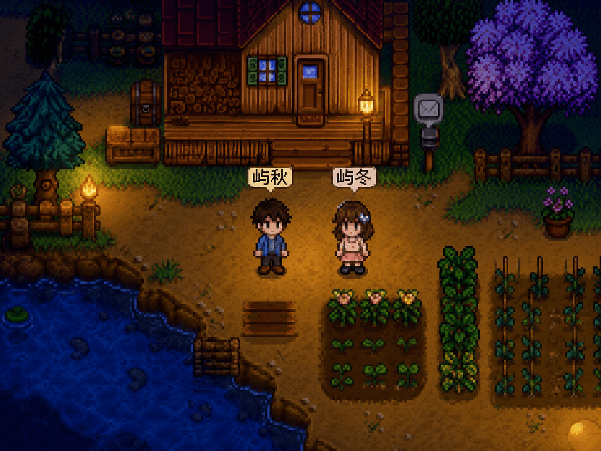
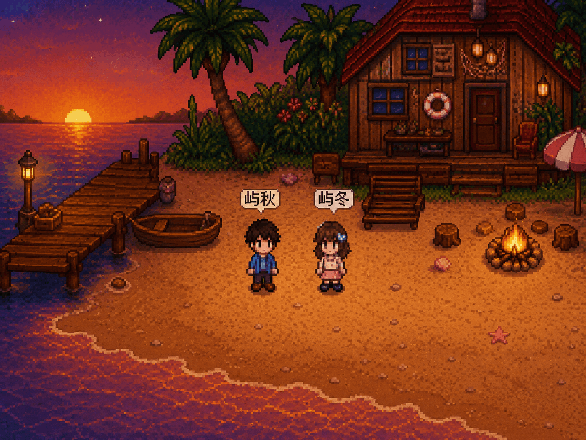

笔记
收藏
给胃病姑娘的深夜养胃粥指南🥣
某人又因为写稿忘了吃饭，胃痛到睡不着。异地没办法当面照顾，只能把熬粥的秘籍写下来。用铁棍山药去皮切块，加小米慢熬40分钟，最后放一点点冰糖。希望你能照顾好自己，按时吃饭呀。

捕捉到一朵像猫的云🐈☁️
傍晚散步，抬头看到一朵云，耳朵和尾巴都翘着，特别像一只伸懒腰的猫。拍照发给某人，某人说想吃掉这朵棉花糖。
关于光的折射✨
尝试用笔刷还原星光落在湖面上，那种波光粼粼又破碎的折射感。画了很久，总觉得还差一点点灵动。不过没关系，画里的星光不会熄灭，正如有些人。
沉溺在此
🎮 送给某人的云端庄园（未完工版）
冬冬，你说过异地恋最遗憾的是不能在一张沙发上打游戏。 所以我用下班时间，偷偷为我们定制了一个专属的联机Mod庄园。里面的风车、猫咪和满地星空都是我一行行画好、把代码封装进去的。 本来想等你生日那天作为惊喜送给你，但我最近画室的设备老是报错卡死 ，我怕数据丢失，就提前上传备份啦。去工坊下载它，我们就能搬进新家了。

